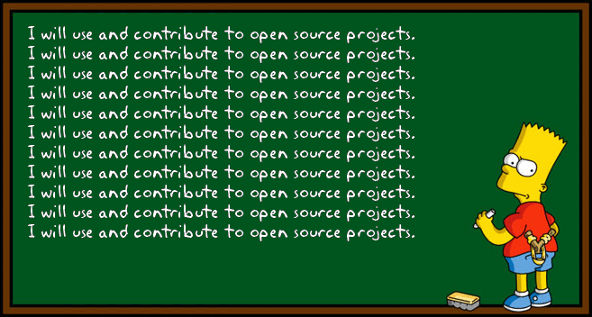
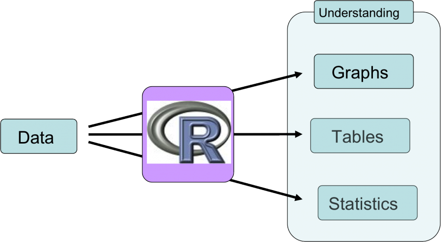
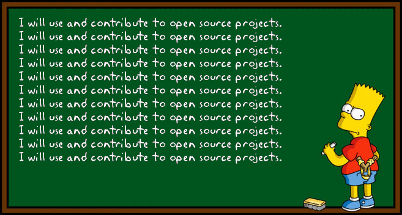
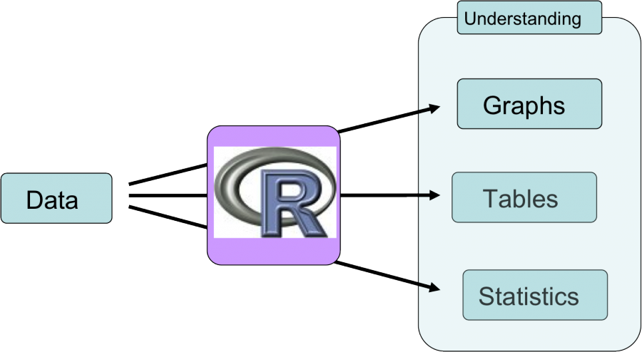

Chapitre 3 Comprendre ce que sont R et RStudio
3.1 Qu’est-ce que R?
R est un langage de programmation open source conçu pour l’analyse statistique, l’exploration et la visualisation de données.
3.2 Pourquoi utiliser R?
- R est en source libre ! Ça signifie que ce logiciel est libre, gratuit et constamment mis à jour et amélioré.
- R est compatible avec la majorité des système d’exploitation, ce qui rend le partage de codes R facile. De plus, le langage R permet d’entrer en contact avec des gens de divers horizons à travers le monde et avec différents systèmes d’exploitation.
- R peut créer des tableaux, produire des graphiques et faire des analyses statistiques, le tout au sein du même logiciel. Avec R, il devient inutile d’utiliser plus d’un logiciel pour la gestion de vos données. Tout est possible avec un seul logiciel !
- De plus en plus de scientifiques utilisent R chaque année. Ses capacités sont en augmentation constante et vont continuer dans cette direction au fil des années. Cela signifie également qu’il y a une grande communauté en ligne qui peut vous donner un coup de main lorsque vous rencontrez un problème dans R.
 



3.3 Utiliser RStudio
RStudio est un environnement de développement intégré pour R. Ça signifie que c’est un endroit où on peut utiliser le langage R, visualiser des tableaux et des figures et même réaliser une multitude d’analyses statistiques. Il est recommandé d’utiliser R Studio au lieu de la simple ligne de commande, car plusieurs options de visualisation et outils (que vous apprendrez au cours de cet atelier) sont disponibles avec RStudio.
3.3.1 DÉFI 1
Lancer RStudio

Note pour les utilisateurs Windows: si la restriction: "Unable to write on disk" apparaît quand vous ouvrez R Studio ou que vous installez une bibliothèque, fermez l’application. Cliquez avec le bouton droit de la souris sur l’icône R Studio et choisissez “Execute as administrator” pour ouvrir R Studio.
La console RStudio
Lorsque vous lancez RStudio, le premier élément que vous voyez à la gauche de l’écran est la console. C’est à cet endroit que vous allez travailler pour le reste de cet atelier d’introduction à R.

L’exemple suivant illustre le format du texte qui apparaît typiquement à l’écran :
sortie <- "Ceci est la sortie"
sortie## [1] "Ceci est la sortie"Note 1: Il faut toujours appuyer sur "Entrée" pour lancer une commande dans la console.
Note 2: Les nouveaux utilisateurs de R se demandent souvent ce que les crochets devant la sortie représentent. Ils indiquent tout simplement la position des éléments de la sortie. Par exemple, si vous demandez à R d’afficher les nombres de 1 à 10 et que la sortie est sur deux lignes, les crochets au début de la deuxième ligne indiquent à quel élément on est rendu (le 6ième élément dans ce cas-ci).
[1] 1 2 3 4 5
[6] 6 7 8 9 103.4 Erreur et avertissement
Warning message
x <- c("2", -3, "end", 0, 4, 0.2)
as.numeric(x)## Warning: NAs introduced by coercion## [1] 2.0 -3.0 NA 0.0 4.0 0.2Met en garde l’utilisateur sans arrêter l’exécution d’une fonction.
Bien que la fonction puisse vous donner une réponse, il pourrait y avoir un problème avec vos entrées. Ainsi, le calcul pourrait être erroné.
Error message
x * 10## Error in x * 10: non-numeric argument to binary operator- Arrête l’exécution en cours car R est incapable de réaliser le calcul. Il indique un problème dans votre code
Pour résoudre une erreur, Google est votre meilleur ami.